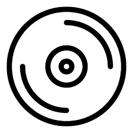
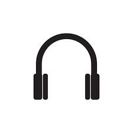

Discografia:
Top 10 músicas mais ouvidas:
Redes Sociais:
Galeria de fotos:

Capital Kings, segundo a wikipedia, foi uma banda pop americana e EDM, criada em 2010 e entrou em um hiato indefinido em 2018.
Originária de Washington, D.C, a banda era formada, inicialmente, por Jon White e Cole Walowac. Cole tocava bateria e Jon cantava. O primeiro álbum lançado foi "I Feel So Alive", em 2012. Em 2016, durante uma turnê, Jon White anunciou que deixaria a banda para seguir carreira solo. Algum tempo depois, Dylan Housewright foi anunciado como sunstituto de Jon após o lançamento do single "I Can't Quit". Em 2017, diversos singles foram lançados antes de ser anunciado que a banda entraria em um hiato indefinido após o nascimento do filho de Dylan Housewright. Fizeram participações especiais em músicas de outros cantores também, como "This Is Not a Test" de TobyMac, "Loud And Clear" de Da'T.R.U.T.H, "Ready Set Go' de Royal Tailor, entre outras. Capital Kings tem, no spotify, 194.002 seguidores e 267.912 ouvintes mensais.